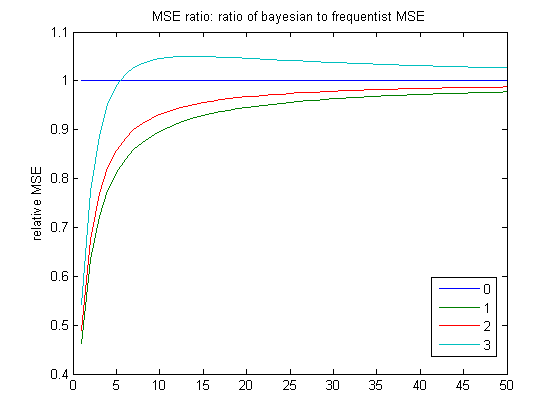
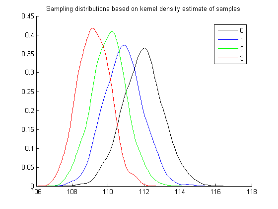
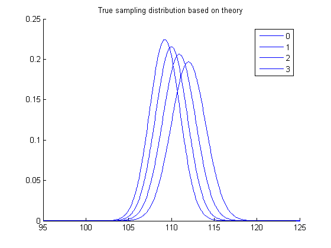

Relative MSE plot
requireStatsToolbox
n = 1:50;
k0 = 0:3;
sigmaTrue = 13;
mu0 = 100;
thetaTrue = 112;
theta0 = 100;
mseThetaE = zeros(length(n), length(k0));
mseThetaB = zeros(length(n), length(k0));
for k=k0
w = (n./(n + k));
mseThetaE(:,k+1) = sigmaTrue^2./n;
mseThetaB(:,k+1) = w.^2.*sigmaTrue^2./n + (1-w).^2*(mu0 - thetaTrue)^2;
end
ratio = mseThetaB ./ mseThetaE;
plot(ratio);
legend(strread(num2str(k0),'%s'), 'Location', 'Best');
title('MSE ratio: ratio of bayesian to frequentist MSE');
ylabel('relative MSE');
nSamples = 10; nBootSamples = 1000;
thetaBoot = zeros(nBootSamples, length(k0));
model = struct('mu', thetaTrue, 'Sigma', sigmaTrue);
for k=k0
for b=1:nBootSamples
X = gaussSample(model, nSamples);
thetaBoot(b,k+1) = (mean(X)*nSamples + theta0*k)/(nSamples + k);
end
end
opt = {'k', 'b', 'g', 'r'};
figure(); hold on;
for k=k0
[f,xi] = ksdensity(thetaBoot(:,k+1));
plot(xi, f, opt{k+1});
end
legend(strread(num2str(k0), '%s'), 'Location', 'Best');
title('Sampling distributions based on kernel density estimate of samples');
xrange = 95:(1/10):125;
w = nSamples ./ (nSamples + k0);
var = w.^2*sigmaTrue^2/nSamples;
thetaEst = w*thetaTrue + (1-w)*theta0;
figure(); hold on;
for k=k0
plot(xrange, gaussProb(xrange, thetaEst(k + 1), sqrt(var(k+1)))), opt{k+1};
end
title('True sampling distribution based on theory');
legend(strread(num2str(k0), '%s'), 'Location', 'Best');
  